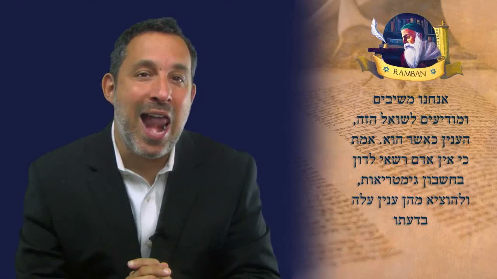

字母數值（Gematria）：拉姆班論密碼的能力與危險 The Gematria: Nachmanides on the Power and the Danger of the Code
在《救贖之書》(Sefer HaGeulah) 系列的最後一課，拉姆班（Ramban，那賀曼尼德）面對一個尖銳的挑戰：如果你的整套神學都建立在「字母數值」(gematria) 上，那豈不是胡言亂語？拉比沙皮拉帶我們讀拉姆班自己的回答——字母數值可以是智慧的開胃菜，也可以是一把割得很深的刀。 In the final lesson of the Sefer HaGeulah (Book of Redemption) series, the Ramban (Nachmanides) faces a sharp challenge: if your whole theology rests on gematria, isn't that nonsense? Rabbi Shapira walks us through the Ramban's own answer — gematria can be an appetizer of wisdom, or a knife that cuts very deep.
我們來到《救贖之書》(Sefer HaGeulah，ספר הגאולה) 系列的最後一課。在前一課，我們看見了救贖 (geulah，גְּאוּלָה) 與妥拉之間的連結；今天拉姆班 (Ramban，那賀曼尼德) 處理一個會讓許多人不安的題目——字母數值 (gematria，גִּימַטְרִיָּה)。拉比沙皮拉提醒我們：拉姆班一生用「PaRDeS」(פַּרְדֵּס) 的方法——p'shat 字面、remez 暗示、drash 講解、sod 奧秘——去挖掘經文更深的意義，卻始終以字面 (p'shat) 為根基。問題是：如果有人說「你的整套神學都建在 gematria 上，那不就是胡言亂語嗎？」拉姆班承認這個危險是真的——然後給出他極為謹慎的回答。 We arrive at the final lesson of the Sefer HaGeulah (Book of Redemption, ספר הגאולה) series. In the previous lesson we saw the connection between redemption (geulah, גְּאוּלָה) and the Torah; today the Ramban (Nachmanides) takes up a topic that unsettles many — gematria (גִּימַטְרִיָּה), the numerology of the Hebrew letters. Rabbi Shapira reminds us that the Ramban worked by the method of PaRDeS (פַּרְדֵּס) — p'shat (plain), remez (hint), drash (homily), sod (mystery) — to draw out the deeper meanings of the text while always anchoring on the plain sense. The challenge: if someone says, “Your whole theology rests on gematria — isn't that just mumbo-jumbo?” the Ramban concedes the danger is real — and then gives his deeply cautious answer.
一、什麼是 Gematria？I. What Is Gematria?
字母數值 (gematria，גִּימַטְרִיָּה) 是把希伯來字母當作數字、由字母的組合得出數值，從而為經文提供「講解式的線索」(homiletical clues) 的方法，與奧秘 (sodot) 等等相連。拉比沙皮拉強調：拉姆班用 PaRDeS 的四重進路讀經，gematria 屬於其中較深的層次。但在這一課裡，拉姆班正面處理的，是 gematria 本身的有效性——以及它的不足。 A gematria (גִּימַטְרִיָּה) is a combination of the letters taken as numbers, yielding numerical values that give us homiletical clues about the text — bound up with the sodot (secrets) and so on. Rabbi Shapira stresses that the Ramban read by the fourfold PaRDeS approach, with gematria belonging to its deeper layers. But in this lesson the Ramban tackles head-on the validity — or the lack of it — of gematria itself.
拉比沙皮拉翻開拉姆班的原文，與我們一同誦讀。拉姆班寫道：「ואם ישיב אדם עליי בסמכי על חשבון האותיות שקוראים אותם גימטריא」——「倘若有人來反駁我，說我把我的神學 (somech，「倚靠」) 建立在他們稱為『字母數值』(gematria) 的方法上⋯⋯」拉姆班把那位反對者的口氣設想得很尖銳：在他看來，gematria 簡直是「胡言亂語」(mumbo-jumbo)、是無稽之談。 Rabbi Shapira opens the Ramban's own words and reads with us. The Ramban writes: “ואם ישיב אדם עליי בסמכי על חשבון האותיות שקוראים אותם גימטריא” — “If a person should challenge me, that I am basing my theology (somech, ‘leaning upon’) on the method they call ‘gematria’…” The Ramban frames the objector sharply: in such a mind, gematria is sheer “mumbo-jumbo,” nonsense.
二、拉姆班承認的真實危險II. The Real Danger the Ramban Admits
拉比沙皮拉指出：拉姆班在這件事上非常公道。為什麼有人能說 gematria 是無稽之談？因為幾乎任何結論都能用 gematria「證明」出來。拉比舉了一個生動的例子：你大可以「從『בְּרֵאשִׁית』(起初) 這個字往下數第五十七個字母」，最後「證明」出某個你想要的詞——這正是拉姆班所警告的。 Rabbi Shapira notes that the Ramban is scrupulously fair here. Why can someone dismiss gematria as nonsense? Because almost anything can be “proven” from gematria. The rabbi gives a vivid example: you could “count fifty-seven letters down from the word Bereshit (in the beginning)” and end up “proving” whatever word you were fishing for — which is exactly what the Ramban warns against.
拉姆班用一個很重的詞來形容這個危險：「דבר רע」(davar ra)——「一件壞事」、「一件邪惡的事」。拉比沙皮拉解釋：有人可以用 gematria 憑空造出一整套神學，而這是真實的、極其危險的事——人會開始把自己的神學奠基在自編的 gematria 上。所以拉姆班說：不行，我們對 gematria 必須極為謹慎。 The Ramban uses a heavy phrase for this danger: “davar ra” (דבר רע) — “an evil thing.” Rabbi Shapira explains: a person can conjure up an entire theology out of gematria, and this is a real and extremely dangerous thing — people begin to base their theology on numbers they invented. So the Ramban says: no, we must be very careful with gematria.
三、我們的回答：沒有人可以自創 GematriaIII. Our Answer — No One May Invent His Own Gematria
拉姆班接著寫：「אנחנו משיבים ומודיעים לשואל הזה」——「我們回應，並向這位發問者說明。」拉比沙皮拉說，這個答案至關重要。拉姆班立下一條大規矩，要每個人都明白：沒有任何人有權自創 gematria。 The Ramban continues: “anachnu mashivim u-modi'im la-sho'el ha-zeh” — “We respond, and we give an answer to this questioner.” Rabbi Shapira says the answer is crucial. The Ramban lays down a great rule he wants everyone to grasp: no one has the authority to invent his own gematria.
拉比沙皮拉說，人們時常打電話給他，說：「嗯，242 等於某個 gematria⋯⋯所以 gematria『大衛』(David) 就是⋯⋯」他坦白：「我只是隨手舉個例子，我不知道那個數字對不對。」重點不在數字，而在規矩：我們不能這樣做。按照拉姆班，gematria 是被傳遞下來的東西 (something passed down to us)，不是今天可以自行「創新」(chidush，חִדּוּשׁ) 的東西。「ולא אוצים מהן עניין עלה בדעתו」——沒有人能拿自己腦袋裡剛冒出來的念頭，今天就在 gematria 上立一個「新發現」。 Rabbi Shapira says people call him all the time: “Well, 242 equals such-and-such a gematria… so the gematria of ‘David’ is…” He admits frankly, “I'm just throwing out an example; I don't know if the number is right.” The point is not the number but the rule: we cannot do this. For the Ramban, gematria is something that must be handed down to us — not a chidush (חִדּוּשׁ, “novelty”) one is free to invent today. “ve-lo … inyan she-alah be-da'ato” — no one may bring a brand-new finding in gematria straight out of his own head.
四、Kabbalah：被「領受」的，才算數IV. Kabbalah — Only What Is “Received” Counts
這裡拉姆班用了一個詞：Kabbalah (קַבָּלָה)。拉比沙皮拉特別澄清：他這裡講的不是「卡巴拉」那套神秘學。Kabbalah 的字根意思是「領受」(able to receive)。拉姆班的意思是：那些我們從歷代智者 (Chazal，חז״ל) 所領受的 gematria，是可以的——因為那是被傳遞下來給我們的。自創的新 gematria，非常、非常危險。 Here the Ramban uses a word: Kabbalah (קַבָּלָה). Rabbi Shapira is careful to clarify: he is not talking about the mystical system called “Kabbalah.” The root of Kabbalah means “to receive.” The Ramban's point: the gematriot we have received from the Sages (Chazal, חז״ל) are fine — because they were handed down to us. New, self-made gematriot are very, very dangerous.
拉姆班的立場因此非常清楚：若你想用 gematria 去「證明」一個論點，不要做。連嘗試走這條路都不要。拉姆班說，你會錯。但若那是一個 Kabbalah——是被傳遞給我們的——那就可以。拉比沙皮拉解釋這條傳遞的脈絡：有些 gematria 是一路傳到摩西拉賓努 (Moshe Rabbeinu，摩西我們的老師)。所有的 gematria 都是由父傳子、由父傳子，可以上溯到摩西拉賓努。它們是口傳的 (passed orally)，是為了向我們解釋某件事而存在的。 The Ramban's stance is therefore unmistakable: if you want to use gematria to “prove” a point, don't. Don't even attempt that path. You will be wrong, he says. But if it is a Kabbalah — something passed down to us — then it is fine. Rabbi Shapira traces the chain: some gematriot run all the way back to Moshe Rabbeinu (Moses our teacher). All the gematriot are passed from father to son, from father to son, dating back to Moshe Rabbeinu. They were handed down orally, and exist to explain something to us.
「字母數值 (gematria) 乃是『智慧的開胃菜』(parperaot le-chochmah，פַּרְפְּרָאוֹת לַחָכְמָה)。」——《先賢箴言》(Pirkei Avot) 3:18 “Gematria is ‘parperaot le-chochmah’ (פַּרְפְּרָאוֹת לַחָכְמָה) — appetizers for wisdom.”— Pirkei Avot 3:18
拉比沙皮拉解釋這個關鍵的譬喻：parpara 其實不是希伯來文，而是亞蘭文，意思是「開胃菜」(appetizer)。拉姆班要說的是：我們不能把整套神學的根基建立在 gematria 上——危險、危險、危險。但這些 gematria 可以像是通往「正餐／甜點」前的開胃小菜——引你進入智慧，卻不是智慧本身的承重牆。 Rabbi Shapira unpacks the key metaphor: parpara is not actually Hebrew but Aramaic, meaning “an appetizer.” The Ramban's message: we cannot build our entire theological foundation on gematria — dangerous, dangerous, dangerous. But these gematriot can serve like an appetizer before the main course — drawing you into wisdom, yet never the load-bearing wall of wisdom itself.
五、Gematria 的真正用途：拼出妥拉的拼圖V. The True Purpose — Assembling the Torah's Jigsaw
拉姆班繼續：「ושאר התורה שבעל פה … מהן בעניין הגדה, ומהן בעניין איסור היתר כמו שאמרו חז״ל」，並引用民數記第六章第五節。拉比沙皮拉解釋：所有的 gematria 都服務於兩個目的。其一，作為 Midrash Haggadah（講解性的米大示）——告訴我們某件事、預備我們、為我們解釋一個預言。其二，屬於 issur（禁令）的範疇——是一條「禁止／准許」的律法分判。 The Ramban continues: “u-she'ar ha-Torah she-be-al-peh … me-hen be-inyan ha-haggadah, u-me-hen be-inyan issur heter kemo she-amru Chazal,” citing Numbers 6:5. Rabbi Shapira explains: all gematriot serve two purposes. First, as Midrash Haggadah — to tell us something, to prepare us, to explain a prophecy. Second, in the realm of issur (prohibition) — a legal ruling of “forbidden / permitted.”
這裡是核心：拉姆班說，研究 gematria 是為了找出「等值對應」(gizra shavah，גְּזֵרָה שָׁוָה)——「相等的份量」，那正是妥拉本身的具體化。拉比沙皮拉解釋：妥拉裡有 gizra shavah——一個重複出現的字、一個重複出現的詞組。我們要 gematria，是為了找出這些 gizrot shavot，好讓我們能把聖經像拼圖一樣拼接起來。 Here is the heart of it: the Ramban says the study of gematria is to find the gizra shavah (גְּזֵרָה שָׁוָה) — the “equal weight,” which is the very embodiment of Torah. Rabbi Shapira explains: in the Torah there is a gizra shavah — a word or phrase that recurs. We want gematria in order to find these gizrot shavot, so that we can connect the Scriptures together like a jigsaw puzzle.
按拉姆班，整本聖經就像一幅拼圖。這就叫 「גופי תורה כלולים בה」(gufei Torah keluim bah)——「妥拉的本體都包含在其中」；全部妥拉都仰賴我們把這些片段連接起來。使用 gematria 唯一正當的理由，就是去連結那些表面上看似毫不相干的經文，把它們拼合成一幅完整的圖畫。 For the Ramban, the whole Bible is like a jigsaw puzzle. This is what is called “gufei Torah keluim bah” (גופי תורה כלולים בה) — “the body of the Torah is contained within it”; all the Torah depends on us connecting the pieces. The only legitimate reason to use gematria is to link verses that look entirely unrelated and fit them into one complete picture.
六、那把刀：Gizra Shavah 也必須小心VI. The Knife — Even Gizra Shavah Must Be Handled with Care
拉比沙皮拉提醒我們看拉姆班有多麼保守、謹慎：不只是 gematria 不能自創，連 gizra shavah 也不能自編。他舉了一個例子：「שאלו שלום ירושלים」（你們要為耶路撒冷求平安／shalom）——有兩節經文都出現「平安」(shalom，שָׁלוֹם) 這個字。從技術上講，一個人「大可說：『這兩節經文是相連的，因為它們都有 shalom 這個字。』」 Rabbi Shapira draws our attention to just how conservative and cautious the Ramban is: not only may you not invent a gematria, you may not invent a gizra shavah either. He gives an example: “sha'alu shalom Yerushalayim” (pray for the shalom of Jerusalem) — two verses both contain the word “peace” (shalom, שָׁלוֹם). Technically a person “could say: ‘These two verses are connected, because they both contain the word shalom.’”
但拉姆班警告：若這個 gizra shavah 違背了妥拉的原則，那它就是危險、危險、危險的。然而我們又確實需要 gizrot shavot 與 gematria 去理解妥拉。拉比沙皮拉用一個鮮明的比喻：它就像一把刀，可以把你割得很深很深——但你必須懂得怎麼用它。 But the Ramban warns: if a gizra shavah runs against a principle of the Torah, it is dangerous, dangerous, dangerous. And yet we genuinely need the gizrot shavot and gematria to understand the Torah. Rabbi Shapira's vivid image: it is like a knife that can cut you very, very deep — but you must know how to use it.
「אֵין אָדָם דָּן גְּזֵרָה שָׁוָה מֵעַצְמוֹ」
「沒有人能憑自己作出 gizra shavah（等值對應）。」 “Ein adam dan gezera shava me-atzmo”
“No one may derive a gizra shavah on his own authority.”
拉比沙皮拉引述拉姆班所援引的《塔木德‧逾越節篇》(Tractate Pesachim 66) 這句話：沒有人有權憑自己把兩節經文連結起來，除非那是被傳遞給他的。而且拉姆班加上一條：「ובא להקים לא לסתור」——即使你看一個 gizra shavah，它出現也只有一個目的：成全妥拉 (lekayem)，而不是推翻妥拉 (lo listor)。任何用 gizra shavah 去教導違背妥拉之事的人，拉姆班說：把它丟掉。任何拿出一個未曾被傳遞給我們的 gizra shavah 或 gematria 的人——同樣，丟掉它。 Rabbi Shapira cites the line the Ramban quotes from Tractate Pesachim 66: no one has the authority to connect two verses by a gizra shavah from his own self, unless it was handed down to him. And the Ramban adds: “u-va lehakim, lo listor” — even when you examine a gizra shavah, it comes for one purpose only: to fulfill the Torah (lekayem), not to reject it (lo listor). Anyone who brings a gizra shavah to teach something against Torah — throw it out, says the Ramban. Anyone who brings a gizra shavah or gematria that was not handed down to us — likewise, throw it out.
七、那麼「聖靈」呢？VII. But What About the Holy Spirit?
拉比沙皮拉預想到一個問題：「為什麼不能靠聖靈？難道我們不能倚靠聖靈來作新的 gematria 嗎？」這正是我們容易錯失拉姆班重點的地方。拉姆班的重點是：所有的 gematriot——只要使用得當——不僅是「潔淨／合宜」(kosher) 的，而且它們本就是從摩西拉賓努一路傳下來的。因此，我們根本不需要去創造任何新的東西——它早已在那裡了。 Rabbi Shapira anticipates a question: “Where is the Holy Spirit? Couldn't we rely on the Holy Spirit to derive new gematriot?” This is exactly where we tend to miss the Ramban's point. His point: all the gematriot — when used properly — are not only kosher, they have already been handed down from Moshe Rabbeinu. Therefore we have no need to create anything new — it is already there.
我們唯一要做的，是懂得如何使用它，而不去濫用它。而「使用」它的意思是：我們運用這些 gematriot，好叫我們明白妥拉、好叫我們知道如何按妥拉去生活——再無其他。 Our only task is to know how to use it, and not to abuse it. And to “use” it means: we employ the gematriot so that we understand Torah, and so that we know how to live our lives according to Torah — and nothing else.
八、關於分辨VIII. A Word on Discernment
值得為華人讀者標明一句：本課所談的 gematria 與 gizra shavah，在猶太傳統的釋經分層裡，屬於 drash（講解、homiletical）的層次，而非 p'shat（字面）。這正是拉姆班反覆警告的緣由：講解層的工具威力極大，卻不能承載字面層才該承擔的神學重量。把 gematria 抬升成「證明」教義的硬證據，就是把開胃菜當成了正餐的承重牆——這是拉姆班、也是拉比沙皮拉一再勸阻的。 A note worth flagging: the gematria and gizra shavah discussed in this lesson belong, within the layers of Jewish interpretation, to the level of drash (homiletical), not p'shat (plain sense). This is precisely why the Ramban warns so insistently: the homiletical tools are immensely powerful, yet they cannot bear the theological weight that belongs to the plain text. To elevate gematria into hard “proof” of doctrine is to mistake the appetizer for the main course's load-bearing wall — the very thing the Ramban, and Rabbi Shapira, repeatedly caution against.
拉比沙皮拉的總結，乾淨利落：Gematria 好不好？好。Gematria 危險嗎？危險。我們該用 gematria 嗎？該用。但不是我們自編的 gematria——而是那些作為「智慧開胃菜」被傳遞給我們的 gematria。 Rabbi Shapira's summary is crisp: Is gematria good? Yes. Can gematria be dangerous? Yes. Should we use gematria? Yes. But not our own gematriot — only the gematriot that were handed down to us as appetizers of wisdom.
九、結語 ── 救贖之書的封印IX. Closing — The Sealing of the Book of Redemption
這是《救贖之書》系列的最後一課，而它的收束意味深長。拉姆班整套關於救贖 (geulah，גְּאוּלָה) 的論證，不是建立在自編的數字遊戲上，而是建立在一條被忠實領受、代代相傳的真理之鏈上——從摩西拉賓努，到歷代智者，到我們手中。救贖不是一個任人破解的密碼；它是一份被領受、被守護、被活出來的盟約。願我們也像拉姆班教導我們對待 gematria 那樣，對待整本聖經：以敬畏領受它、以忠心守護它、以順服活出它。 This is the final lesson of the Book of Redemption series, and its closing is fitting. The Ramban's entire argument about redemption (geulah, גְּאוּלָה) rests not on invented number-games but on a chain of truth faithfully received and handed down — from Moshe Rabbeinu, through the Sages, into our hands. Redemption is not a code to be cracked at will; it is a covenant to be received, guarded, and lived. May we treat the whole of Scripture the way the Ramban teaches us to treat gematria: receiving it in awe, guarding it in faithfulness, living it out in obedience.
「字母數值好不好？好。它危險嗎？危險。我們該用它嗎？該用——但不是我們自編的數值，而是那些作為智慧開胃菜被傳遞給我們的。願我們不去濫用這把利刃，只用它來明白妥拉、按妥拉而活。願這位救贖者的名——耶和華拯救——被傳遞、被守護、被活出，直到那日。Litraot。」 “Is gematria good? Yes. Is it dangerous? Yes. Should we use it? Yes — not our own numbers, but the ones handed down to us as appetizers of wisdom. May we never abuse the knife, but use it only to understand the Torah and to live by it. And may the name of the Redeemer — the LORD saves — be received, guarded, and lived out, until that Day. Litraot.”